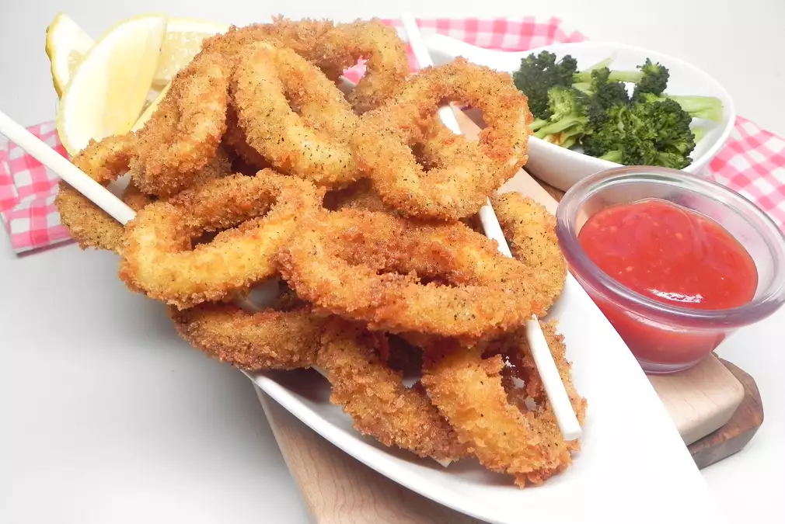

Recipe List
Fried Calamari

Description
A crispy, fresh-tasting fried calamari, found on most Asian Restaurants
Ingredients
- 1 egg
- 1/4 cup milk
- 2 cups panko bread crumbs
- 3 teaspoons cracked black pepper
- 2 teaspoons sea salt
- 1 pound calamari rings
- 1/2 cup all-purpose flour
- vegetable oil for frying
Steps
- Whisk egg and milk together in a bowl. Mix panko, pepper, and salt in a shallow bowl
- Lightly dust calamari with flour, shaking off any excess. Dip in egg mixture then panko mixture to coat. Transfer to a plate and refrigerate for 20 minutes
- Heat oil in a saucepan or deep fryer. Deep-fry calamari in batches until light golden brown, about 3 minutes. Drain on paper towels.